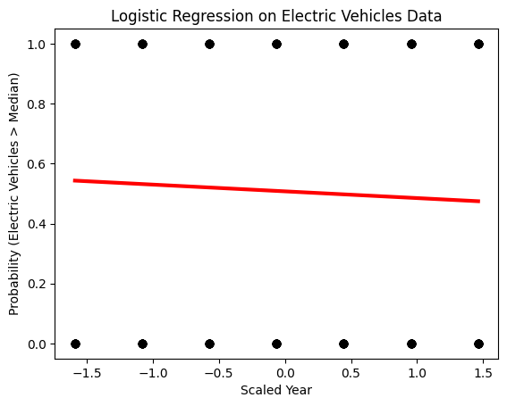

Overview
Linear Regression is a statistical method that models the relationship between a dependent variable and one or more independent variables using a linear equation. This method is widely used for prediction and forecasting where data shows a linear trend. However, its main limitation is that it assumes a linear relationship between the variables, which isn't always the case in real-world data.
In machine learning, linear regression is a statistical technique that predicts a continuous dependent variable from one or more independent variables. In the most basic type of linear regression, called simple linear regression, the objective is to identify a linear relationship between the inputs and the output, which can be represented as a straight line.
How Linear Regression Works
- Model Formulation:
- Simple Linear Regression involves a single independent variable and is modeled as: y = β0 + β1x + ε where y is the dependent variable, x is the independent variable, β0 is the y-intercept, β1 is the slope, and ε is the error term.
- Multiple Linear Regression involves multiple independent variables: y = β0 + β1x1 + β2x2 + ... + βnxn + ε
- Parameter Estimation:
The coefficients (β) are estimated using the least squares criterion, which involves minimizing the sum of the squares of the residuals (the differences between observed and predicted values).
- Prediction:
Once the model coefficients are estimated, the model can make predictions for new data by plugging in values for the independent variables and calculating the corresponding predicted value of the dependent variable.
Limitations of Linear Regression
- Linearity Assumption: The basis of linear regression is the idea that the independent and dependent variables have a linear relationship. If the underlying relationship is non-linear, this is a serious drawback because the model will be unable to adequately represent the subtleties of the data.
- Outlier Sensitivity: Data outliers can affect linear regression models significantly, potentially producing a model that does not adequately fit the majority of the data and can have a substantial impact on the regression line's slope.
- Multicollinearity: In multiple linear regression, high correlation among independent variables—multicollinearity—can be a challenge when estimating the link between each independent variable and the dependent variable. It may also cause the coefficient estimations' variance to increase, which would make them unstable.
- Homoscedasticity: The model assumes homoscedasticity, meaning the residuals should have constant variance at every level of the independent variable. When this assumption is violated (heteroscedasticity), it can lead to inefficiencies in the coefficient estimates.
- Independence: Observations need to be independent of each other. In the case of time series data, where past data might influence future data, linear regression's effectiveness diminishes unless modifications are made to account for the autocorrelation.
For data modeling, linear regression is a strong, straightforward, and often used method. But for it to be applied effectively, one must be aware of its presumptions and constraints. If any of these presumptions are not met, alternative techniques like polynomial regression, ridge or lasso regression, or non-linear models may be more suitable.
Data Preparation
For Linear Regression, the dataset used consists of two continuous and quantitative variables. One variable acts as the independent variable while the other is the dependent variable being predicted. Below is an image of the dataset.
Let's use the electric vehicle registration data I previously handled to generate a basic dataset for linear regression. In order to make predictions, "Year" will be the independent variable and "Total Vehicles" will be the dependent variable. With this configuration, we may investigate the trends in the quantity of electric cars registered in a given state over time. These two variables will be removed from the dataset, a new, simplified dataset will be made, and an image of the dataset will be provided.
The two continuous variables "Year" and "Total Vehicles" make up this condensed dataset. With this dataset, one can now examine the historical evolution of electric car registrations through a straightforward linear regression.
Dataset Preview:
Year Total Vehicles
2017 594
2018 541
2019 1009
2020 1851
2021 3137
The relationship between the year and the total number of registered electric vehicles is depicted in the plot above. From the scatter plot, you can observe a clear upward trend in the total vehicles registered as years progress. According to this graphic, a linear model would be a decent starting point for predicting the number of electric car registrations by year. However, the growth might also point to the need to investigate non-linear models if accuracy needs to be increased.
The data's linear trend highlights how useful linear regression may be for making time-series predictions of this type, when you anticipate a steady change over time that will either increase or decrease. This visualization aids in confirming the appropriateness of linear regression for the initial analysis and provides a straightforward interpretation that can be easily communicated.
Results
Results of the Linear Regression analysis are presented below. This includes the regression equation derived from the analysis and a plot showing the data points with the fitted regression line.
Model Equation: y = mx + c where m is the slope and c is the intercept.

Understanding the Plot and Logistic Regression Model
Logistic Regression Overview:
- Logistic regression is used for binary classification tasks. In your case, it's used to predict the probability that the number of electric vehicles registered exceeds the median, based on the scaled year.
- The model equation provided is: probability = 1 / (1 + e^(-(-0.090 × year_scaled + 0.030))). This equation shows that the probability is calculated using the sigmoid function, which maps the linear combination of inputs to a probability between 0 and 1.
Plot Analysis:
- The graphic shows the real data points against the logistic regression line (red).
- The likelihood of electric vehicles above the median is plotted on the y-axis, while the scaled year values are plotted on the x-axis.
- There doesn't seem to be any discernible trend or pattern in the distribution of the data points across the scaled year values when it comes to the probability' relationship to the year.
Discussion of Results
Model Performance:
- The accuracy of the model on the test data is reported to be 0.56, which is generally regarded as low for practical purposes but marginally better than a random guess. This could mean that the year is not a reliable predictor for this classification job, or that the model did not adequately capture the underlying link.
Visualizing Fit:
- The logistic regression line is comparatively flat, meaning that variations in the scaled year have little effect on the probability estimate. The model's inability to accurately anticipate the number of electric car registrations that will exceed the median across several years is consistent with its flatness, which also contributes to its very low accuracy.
Our understanding of the dynamics of EV adoption and the use of predictive modeling in this context has been greatly enhanced by the insights gained from the analysis of the logistic regression model used to the electric cars (EV) dataset, as well as the limitations encountered.
Key Learnings
- Limited Predictive Power of the Year Alone: The scaled year alone may not be a reliable predictor, as shown by the logistic regression model that was used to determine whether the number of electric vehicles exceeded the median. The comparatively low accuracy (0.56) suggests that there is insufficient data for the year to provide trustworthy projections for EV registrations that reach a median criterion.
- Non-Linear Patterns: Although useful for binary classification, the logistic regression approach showed that EV adoption and the year may not have a linear or easily modeled connection using a standard logistic framework. This implies that in order to comprehend and forecast EV adoption rates more accurately, additional variables or more intricate models may be required.
- Importance of Additional Variables: This analysis shows that adding more variables to the model may be necessary. More advanced models should take into account the economic considerations, state or regional legislation, technological improvements in electric vehicles, and shifts in consumer preferences as they are anticipated to be major determinants of EV adoption patterns.
Predictions and Implications
- Trend Analysis: Even though the logistic model only offered a few insights, it is nevertheless helpful in realizing that, when taken in isolation, EV registrations do not exhibit a substantial correlation with the year. This implies that examining trends over extended periods of time in isolation from other variables may be deceptive.
- Model Enhancements: It will probably be necessary to combine a number of predictive variables in order to forecast future trends in EV adoption. It may also be necessary to employ more sophisticated statistical or machine learning models. Neural networks, decision trees, and random forests are a few techniques that may produce more insightful and effective predictions.
- Policy and Planning: For policymakers and businesses, understanding that time alone isn't a strong predictor for EV adoption can redirect focus towards factors like improving infrastructure, offering incentives, or investing in technology improvements, which might be more directly correlated with increases in EV registrations.
Broader Insights
- Multifactorial Influence: The study emphasizes that a variety of factors, such as societal trends, technological developments, legal changes, and economic situations, can have an impact on EV adoption. As a result, modeling and analysis must take a comprehensive approach.
- Adaptive Strategies: The findings highlight the significance of adaptive strategies that address more than simply temporal shifts, focusing also on broader economic and social factors, for players in the EV industry, including manufacturers and policymakers.
Conclusions
The study of Linear Regression on the selected dataset provided insights into the linear relationships between the variables. This method allows for predictions on how changes in the independent variable affect the dependent variable, which is crucial for decision-making in various fields such as economics, health, and more.